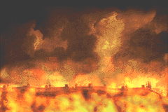

Napoleon (Japan) (Virtual Console)
SRAM 256K
Cartridge Identity
- Game Code
ANPJ(FamilyANP)- Header Title
NAPOLEON- Maker / Revision
01/ rev0- ROM Size
- 8.0 MiB (8,388,608 B)
- Save Media
SRAM 256K- SHA-256
1eb29b6bbe26b1d19680a69d733f93bb30b4005dc6215f278a1174b770e3c363- Engine / SDK Group
comm-011(32 families)
Screenshots


Observed Battery Save Layout
- Fill Byte & Active Size
0xFFfill · 444–444 / 32,768 B active (entropy 1.80 bits/B)- Active Offset Ranges
0x0–0x83,0x88–0x8B,0x90–0x9B,0x9E–0xD3,0x110–0x127,0x1058–0x10D3,0x10D8–0x10DB,0x10E0–0x10EB, +2 more (10 total)- ASCII Magic / Headers
NAPOLEONNAPOLEON,NAPOLEON- Observed Variable Regions
- 0 bytes across 0 spans: None
- Candidate Checksum/Counter Spans
- None
ROM Assets, Compression & Audio
- BIOS Compression
- LZ77 (
0x10): 314 streams · RLE (0x30): 0 streams - ROM Pointer Tables
- 32 tables (3 pointing to validated compressed streams)
- SDK Backup Tags
SRAM_V110
Hardware MMIO Subsystems
ppu_display0x80011cc,0x8004090,0x804eeecsave_bus_sram_flash0x8001640
Regional Variants & Revisions (Family ANP)
- Aigle de Guerre, L' (France) (
ANPF, 8 MiB) - Napoleon (Japan) (
ANPJ, 8 MiB)